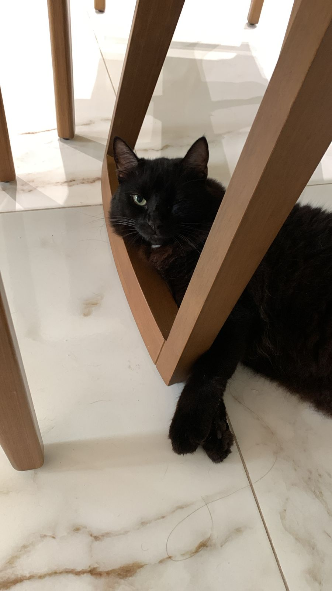
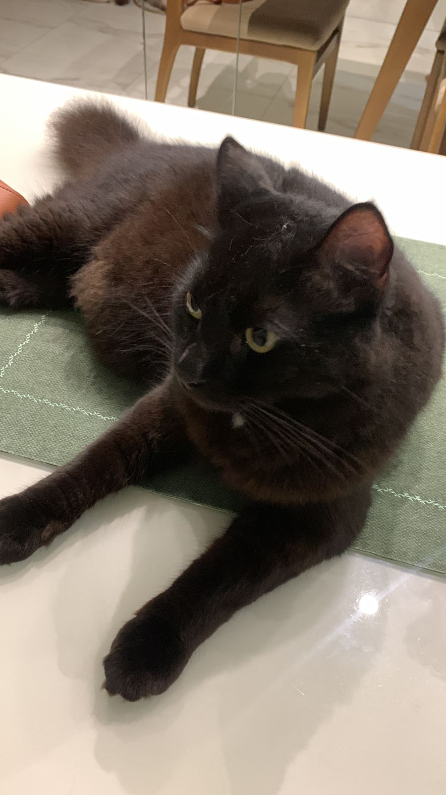

Sobre Salem
Sou um gatinho preto e, pra ser sincero, eu estou sempre com fome. Qualquer barulhinho de embalagem e pronto: apareço na hora, como se tivesse sido invocado pela comida. Às vezes acho que minha humana nem percebe o quanto eu passo fome… o dia inteiro! Também adoro beber água direto da torneira — nada supera aquela água fresquinha caindo, é como um ritual que faço questão de repetir sempre que alguém abre o banheiro. Sou bem manhoso e adoro chamar atenção; passo pela casa miando, me esfregando e pedindo carinho, como se tudo fosse sobre mim (e na verdade deveria ser). No fundo, só quero comida, afeto e um pouco mais de comida.